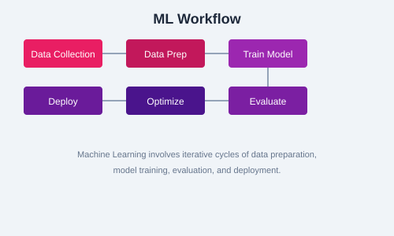

Statistics provides the mathematical foundation for understanding data, evaluating models, and making inferences. This chapter covers descriptive statistics, probability distributions, bias-variance tradeoff, and hypothesis testing.
These are measures of central tendency. The mean is the arithmetic average, the median is the middle value, and the mode is the most frequent value. The median is robust to outliers, while the mean is not.
import numpy as np
from scipy import stats
data = [12, 15, 14, 10, 18, 15, 22, 15, 13]
mean = np.mean(data)
median = np.median(data)
mode = stats.mode(data, keepdims=True)
print(f"Mean: {mean:.2f}")
print(f"Median: {median}")
print(f"Mode: {mode.mode[0]}")Standard deviation and variance measure the spread of data. Variance is the average of squared deviations from the mean. Standard deviation is the square root of variance and is in the same units as the data.
variance = np.var(data, ddof=1) # sample variance
std_dev = np.std(data, ddof=1)
print(f"Variance: {variance:.2f}")
print(f"Std Dev: {std_dev:.2f}")Percentiles divide data into 100 equal parts. The interquartile range (IQR) is the range between the 25th and 75th percentiles. IQR is used to identify outliers (values below Q1 - 1.5*IQR or above Q3 + 1.5*IQR).
Understanding distributions is crucial for choosing models and preprocessing techniques.
The normal (Gaussian) distribution is symmetric and bell-shaped. Many natural phenomena follow this distribution. Many ML algorithms assume normally distributed features.
All values have equal probability. Useful for random sampling and initialization.
Models the number of successes in a fixed number of independent trials. Used in A/B testing and classification evaluation.
import matplotlib.pyplot as plt
import numpy as np
# Generate and plot distributions
x = np.linspace(-4, 4, 100)
normal = (1 / np.sqrt(2 * np.pi)) * np.exp(-0.5 * x**2)
uniform = np.random.uniform(-2, 2, 1000)
binomial = np.random.binomial(n=10, p=0.5, size=1000)
plt.figure(figsize=(12, 4))
plt.subplot(1, 3, 1)
plt.plot(x, normal)
plt.title('Normal Distribution')
plt.subplot(1, 3, 2)
plt.hist(uniform, bins=20, edgecolor='black')
plt.title('Uniform Distribution')
plt.subplot(1, 3, 3)
plt.hist(binomial, bins=10, edgecolor='black')
plt.title('Binomial Distribution')
plt.tight_layout()
plt.show()Skewness measures asymmetry of a distribution. Positive skew means a long right tail; negative skew means a long left tail. Kurtosis measures tail heaviness. High kurtosis means more outliers.

from scipy.stats import skew, kurtosis
data = np.random.exponential(scale=2, size=1000)
print(f"Skewness: {skew(data):.2f}")
print(f"Kurtosis: {kurtosis(data):.2f}")Bias is the error from overly simplistic assumptions. Variance is the error from sensitivity to training data. A good model balances both. High bias leads to underfitting; high variance leads to overfitting.
Hypothesis testing determines whether observed effects are statistically significant. The null hypothesis assumes no effect. A low p-value (typically < 0.05) suggests rejecting the null hypothesis.
from scipy.stats import ttest_ind
group_a = np.random.normal(50, 10, 100)
group_b = np.random.normal(55, 10, 100)
t_stat, p_value = ttest_ind(group_a, group_b)
print(f"t-statistic: {t_stat:.2f}")
print(f"p-value: {p_value:.4f}")
if p_value < 0.05:
print("Significant difference between groups")
else:
print("No significant difference")Statistics is the bedrock of ML. Master descriptive statistics, distributions, skewness, kurtosis, the bias-variance tradeoff, and hypothesis testing. These concepts will guide your modeling decisions.